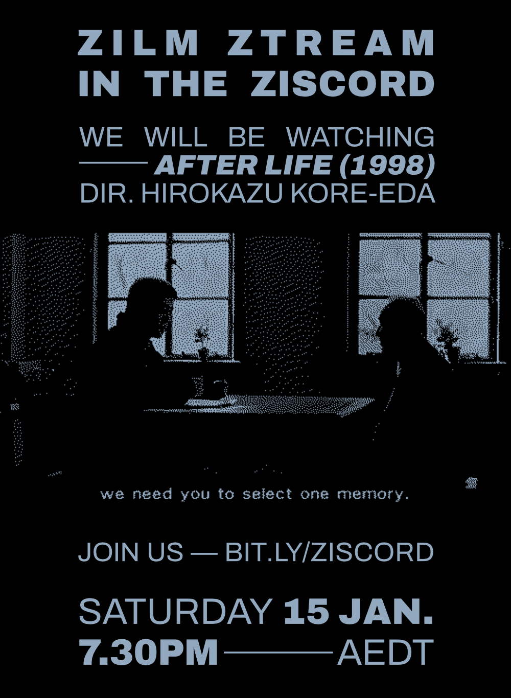

ZILM ZCREENING: AFTER LIFE (1998)
SUNDAY 16 JANUARY /// 7.30PM AEDT /// ONLINE
We're kicking off our first zilm zcreening of 2022 with Hirokazu Kore-eda's After Life (1995).
"A group of people who have recently died find themselves in a limbo realm resembling a relatively mundane building. Counselors, including Takashi (Arata) and Shiori (Erika Oda), are on hand to help new arrivals pick one memory from their lives to bring with them into eternity. Once the memories are chosen, the staff makes a short film representing each one, and the films make up a collage of thoughtful cinematic moments."
